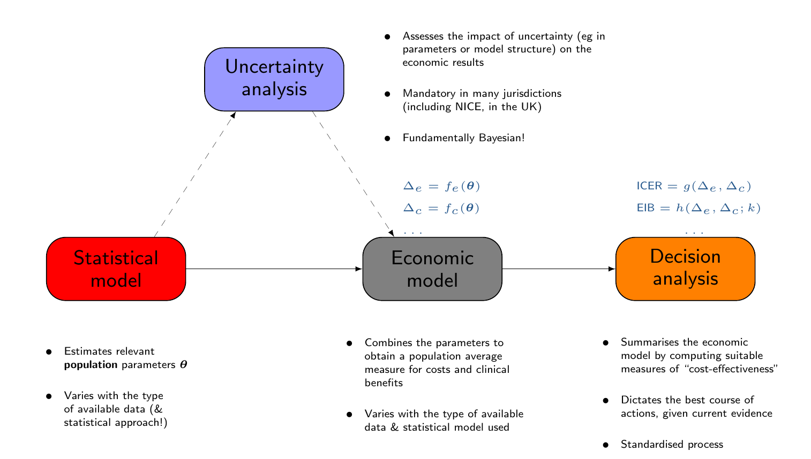

{kind=link}
{kind=link}
{kind=link}
{kind=link}
{kind=link}
{kind=link}
{kind=link}

From Reform to Reassessment: Universal Credit in the Shadow of Its Predecessor
Gianluca Baio
https://gianluca.statistica.it | https://egon.stats.ucl.ac.uk/research/statistics-health-economics
https://github.com/giabaio | https://github.com/StatisticsHealthEconomics
@gianlubaio@mas.to | gianluca-baio
2 July 2026
EPITOME End-of-Grant Workshop, UCL
Check out our departmental podcast “Random Talks” on Soundcloud!
Follow our departmental social media accounts + magazine “Sample Space”
Department of Statistical Science | University College London
Disclaimer
This presentation is a summary of the work conducted in Work-Package 4
- I can take all the credit (…), but in reality, this has been driven by the fantastic work of Ioannis Rotous
- Key contributions to this work have arrived from all the other EPITOME researchers (e.g. in discussions for the methodological framework to represent the underlying processes, as well as for the formalisation of the statistical modelling)
EPITOME
Evaluating Policy Implementation TO Predict MEntal health: a Bayesian hierarchical framework for quasi-experimental designs in longitudinal settings
- WP1: hierarchical statistical framework
- Core Bayesian time series model with spatial/temporal dependency, extended to stepped wedge and matched-control designs
- Simulation study to assess robustness and sensitivity to model and prior choices
- WP2: evaluating impact on mental health need in England
- Apply the framework to five UK datasets to estimate effects of Universal Credit and the Hostile Environment Policy
- Test for independent and combined effects across socioeconomic and ethnic minority groups
- WP3: developing alternative controls
- Develop Bayesian synthetic control and negative outcome control methods for cases with no standard control group
- Apply these to the WP2 case studies and extend simulations to guide their use
- WP4: economic evaluation
- Extend existing forecasting models into a Bayesian framework, propagating uncertainty from WP1 to WP3
- Use multi-state modelling and potentially Value of Information analysis to assess service demand and decision adequacy
Background, Context & Objectives
- The Legacy System (LW): A complex, post-WWII evolved safety net that often required multiple, non-integrated applications for different areas of support
- The Reform Goal: The 2010s policy shift aimed to replace this administrative complexity with Universal Credit (UC) – a single, integrated payment structure
- Primary Policy Aims:
- Efficiency. Streamline administration to reduce system errors and fraud
- Incentive. Create a “work-first” culture by smoothing the transition from benefit dependency to employment
- Simplicity. Reduce the burden on claimants to navigate multiple government agencies
Research Gap & Objectives
- No previous research has modelled the dynamic co-evolution of benefit status and well-being
- In addition, existing literature generally has not quantified the trade-off between government expenditure and long-term socioeconomic outcomes
- Objective: conduct the first formal economic evaluation comparing UC to LW
- Use Health Technology Assessment (HTA) tools to map the entire “welfare trajectory”, not just individual symptoms
Health technology assessment (HTA)
Objective
- Combine costs and benefits of a given intervention into a rational scheme for allocating resources

Multi-state/Markov models
- Assume a set \(\mathcal{S}\) made of \(S\) “clinically relevant” states
- Exhaustive and mutually exclusive
- The structure (links among nodes) describes the dynamics of disease history
- Links connecting two states encode the assumption that a transition from the one where the link originates to the one reached by it is possible
- Absence of a link between two states implies that the transition from one to the other is not allowed by the model
From one period to the next, subjects can move across the states according to the rules specified by the links
Movements occur according to suitable transition probabilities \[\color{#24568c}\bm\pi_j = \bm\pi_{j-1} \bm\Lambda_j\] where
- \(\bm\pi_j=(\pi_{1j},\ldots,\pi_{Sj})\) is the vector of probabilities for each state at time \(j\)
- \(\bm\Lambda_j = [\Lambda_{j;s',s}]\) is a transition matrix describing the probability of moving from state \(s\) to state \(s'\) at time \(j\)
- NB the matrix algebra simply computes for each state \(s\)
\[\color{blue}{\Pr(\style{font-family:inherit;}{\text{Being in state }} s \style{font-family:inherit;}{\text{ at time }} j)= \sum_{s'\in\mathcal{S}}\Pr(\style{font-family:inherit;}{\text{Being in state }} s' \style{font-family:inherit;}{\text{ at time }} j-1)\times \Pr(\style{font-family:inherit;}{\text{Moving from state }}s'\style{font-family:inherit;}{\text{ to state }}s)}\]
Multi-state/Markov models
1. Define a structure (e.g. “Natural history” of the disease)
Multi-state/Markov models
2. Estimate the transition probabilities
For instance:
- \(\lambda_{14} =\) general (healthy) population mortality \(\Rightarrow\) Relevant data: Life tables/official records, . . .
- \(\lambda_{24} =\) disease-specific mortality \(\Rightarrow\) Relevant data: Trial/observational studies, . . .
- \(\ldots\)
Multi-state/Markov models
3. Run the simulation: \(j=0\)
Distribute the “virtual cohort” across the \(S\) states (typically, everybody starts in the “healthy” state…)
Multi-state/Markov models
3. Run the simulation: \(j=1\)
Start moving people around…
Multi-state/Markov models
Matrix algebra and “state occupancy”
\(m_{sj}\) is the number of people in state \(s\) at time \(j\)
\(\lambda_{s'sj}\) is the probability of moving from state \(s'\) to state \(s\) between time \(j\) and \(j+1\)
- Thus:
\[\color{#24568c}{m_{s\, j+1} = m_{1j}\lambda_{1sj} + m_{2j}\lambda_{2sj} + \ldots + m_{Sj}\lambda_{Ssj}}\]
which we can write in matrix algebra as
\[\begin{align} \color{#24568c}{(m_{1\, j+1},\ldots,m_{S\, j+1})} & \color{#24568c}{=\, (m_{1\, j},\ldots,m_{S\, j})\left(\begin{array}{ccc}\lambda_{11j} & \ldots & \lambda_{1Sj} \\ \vdots & \ddots & \vdots \\ \lambda_{S1j} & \ldots & \lambda_{SSj} \end{array}\right)} \\ \color{#24568c}{\bm{m}_{j+1}} & \color{#24568c}{= \, \bm{m}_{j} \bm\Lambda_j} \end{align}\]
- NB: The transition matrix typically does depend on the time \(j\), but sometimes we can relax this assumption
Multi-state/Markov models
3. Run the simulation: \(j=2\)
Move people around according to the relationship \(\bm{m}_{2}=\bm{m}_{1}\bm\Lambda_{1}\)
Multi-state/Markov models
3. Run the simulation: \(j=3\)
Move people around according to the relationship \(\bm{m}_{3}=\bm{m}_{2}\bm\Lambda_{2}\)
Multi-state/Markov models
3. Run the simulation: \(j=J\) (“lifetime horizon”)
- We can associate suitable measures of cost and benefits with each state
- With these, we can compute the overall economic value of different policies
- Each policy will generally have different distributions of the time spent in each state
- This in turn determines different costs & benefits…
Data Source & Sample Selection
- Longitudinal data from Understanding Society (UKHLS), 40,000+ households tracked since 2009
- Focus on working-age (16-64) individuals in Great Britain
- Exclude those with pre-existing lifetime illnesses or disabilities to ensure results reflect policy impacts rather than health crises
- Study Cohorts:
- Universal Credit (6%): exposed to UC between 2013-2020
- Legacy Welfare (40%): exclusive to the old benefit system
- No Benefit (54%): never claimed support
- NB: UC rollout was administratively mandated, not triggered by personal life shocks, allowing us to evaluate the effects of the policy change
Multi-state modelling for the UC/LW evaluation
Layer 1 – Welfare Status: a binary classification of either Welfare Entry (active claim; 6) or Welfare Exit (7)
Layer 2 – Well-Being Space: five distinct states of human experience:
- At Risk; 1 (Baseline): hardship-free
- Distress States: Financial Distress (2), Life Dissatisfaction (3), or Combined (4) (Both)
- Mental Distress (5): clinical endpoint (GHQ-12)
- Well-being pathways are conditional on welfare status
- The welfare layer modulates how individuals transition through the well-being states
- Assumes welfare status drives well-being outcomes rather than the other way around \(\Rightarrow\) isolates the policy’s direct impact
- Simulate 5,000-person cohort year-by-year (2009-2020) to calculate the cumulative time spent in “Distress” vs “Hardship-Free” states
Model: Bayesian Multinomial-logistic ITS
\(w\)elfare status
For individuals \(i = 1, 2, \ldots, n\), residing in a LSOA region \(r_{i}\), belonging to a stratification group \(k_{i}\), assigned to a PSU group \(\psi_{i}\) and observed over time points \(t\) \[ \begin{aligned} \text{Pr}(Y^{(w),i,t} & = q\mid Y^{(w),i,t-1} = q') = \frac{e^{\eta_{q',q}^{i,t}}}{\sum_{q=6}^{7}e^{\eta_{q',q}^{i,t}}} = \chi_{q',q}^{i,t}, \ \txt{with} \ \ \chi_{q',6}^{i,t} + \chi_{q',7}^{i,t} = 1, \\[10pt] \logit({\chi}_{q',q}^{i,t}) = {{\eta}_{q',q}^{i,t}} = & {\color{olive}\beta_{0}^{q}} + {\color{red}\beta_{1}^{q}}\txt{Age}^{i,t} +{\color{red}\beta_{2}^{q}} \txt{HEQ}^{i,t}+ {\color{red}\beta_{3}^{q}}\txt{ETH}^{i,t} + {\color{red}\beta_{4}^{q}}\txt{MS}^{i,t} + {\color{red}\beta_{5}^{q}}\txt{Sex}^{i,t} + {\color{red}\beta_{6}^{q}}\txt{GR}^{i,t} + \\ & {\color{orange}f^{q}_{\txt{Exposed}^{i}}(t)} + {\color{orange}f^{q}_{\txt{Intervention}^{i,t}}} + {\color{blue}\gamma_{r_{i}}^{q}} + {\color{blue}\nu_{k_{i}}^{q}} + {\color{blue}\zeta_{\psi_{i}}^{q}} + {\color{purple}\delta_{t}^{q}} + {\color{purple}e_{i}^{q}} \end{aligned} \]
Destination-specific baseline log-odds
Confounding factors: age, highest education qualification, ethnicity, martial status, sex and Government Office region
Structured terms
- Random effects by stratification group, PSUs and LSOAs to control for neighborhood and regional variations (ensuring results are not just reflecting local geography)
- Random effects to account for temporal variability and individual heterogeneity
- Cubic B-splines to map complex, non-linear population changes across the 2009-2020 timeline
Model: Bayesian Multinomial-logistic ITS
\(w\)ell \(b\)eing status
\[ \begin{aligned} \text{Pr}(Y^{(wb),i,t} & = s\mid Y^{(wb),i,t-1} = s', Y^{(w),i,t} = q) = \frac{e^{\eta_{s',s}^{i,t}}(q)}{\sum_{s=1}^{5}e^{\eta_{s',s}^{i,t}}(q)} = \lambda_{s',s}^{i,t}(q), \\ & \txt{with } {\lambda}_{s',1}^{i,t}(q) + {\lambda}_{s',2}^{i,t}(q) + \ldots {\lambda}_{s',5}^{i,t}(q) = 1, \\[10pt] \logit\left({{\lambda}_{s',s}^{i,t}}(q) \right) = {{\eta}_{s',s}^{i,t}}(q) = & {\color{olive}\beta_{0}^{s}} + {\color{red}\beta_{1}^{s}}\txt{Age}^{i,t} + {\color{red}\beta_{2}^{s}} \txt{HEQ}^{i,t} + {\color{red}\beta_{3}^{s}}\txt{ETH}^{i,t} + {\color{red}\beta_{4}^{s}}\txt{MS}^{i,t} + {\color{red}\beta_{5}^{s}}\txt{Sex}^{i,t} + {\color{red}\beta_{6}^{s}\txt{GR}^{i,t}} + \\ & {\color{orange}f^{s}_{\txt{Exposed}^{i}}(t)} + {\color{orange}f^{s}_{\txt{Intervention}^{i,t}}} + {\color{blue}\gamma_{r_{i}}^{s}} + {\color{blue}\nu_{k_{i}}^{s}} + {\color{blue}\zeta_{\psi_{i}}^{s}} + {\color{purple}\delta_{t}^{s}} + {\color{purple}e_{i}^{s}} + {\color{#C21718}\theta^{s}\mathbb{I}(q = 7)} \end{aligned} \]
- Destination-specific baseline log-odds
- Confounding factors: age, highest education qualification, ethnicity, martial status, sex and Government Office region
- Structured terms
- Random effects by stratification group, PSUs and LSOAs to control for neighborhood and regional variations (ensuring results are not just reflecting local geography)
- Random effects to account for temporal variability and individual heterogeneity
- Cubic B-splines to map complex, non-linear population changes across the 2009-2020 timeline
- Intervention effect: shifts the log-odds of a well-being transition if the individual is currently receiving benefits (= in state \(q=7\))
- Use minimally informative priors + Variational Inference to generate 1000 joint posterior samples
Key Simulation Results: Well-Being

- UC claimants spend significantly more time in adverse states than the LW cohort
- UC claimants show a substantial increase in life-years spent in Financial Distress
- UC increases the probability of transitioning into and staying in Mental Distress and Life Dissatisfaction
- The longer an individual remains on UC, the more negative probabilities compound, reducing time spent in the “At-Risk” (hardship-free) baseline
- UC creates a “sticky” environment that systematically degrades claimant resilience over time
Welfare exit rates over time

- System performance is measured by fluidity, how effectively a system helps claimants transition off benefits (Welfare Exit) vs keeping them trapped (Welfare Entry)
- UC triggered a sharp, continuous drop in welfare exit rates starting in 2013-2014, falling far below the stable exit rates of LW
- Low exit rates affect both migrated and new claimants, proving the decline is a systemic feature of UC rather than just a result of personal life shocks
- Drop in exit capacity is universal across genders, but is most severe among male new claimants
- Instead of acting as an empowering bridge to work, UC introduces structural barriers that prolong welfare reliance
Economic evaluation
- Adapts standard Health Technology Assessment (HTA) principles to measure the financial cost per unit of human well-being achieved by each system
- Evaluates the expected number of life-years an individual spends in the completely hardship-free At Risk (AR) baseline state
| Cost | Benefit | Differential Cost | Differential Benefits | ICER | |
|---|---|---|---|---|---|
| UC | 120 (104, 131) | 3.35 (2.72, 3.92) | - | - | - |
| LW | 72 (56, 86) | 3.87 (3.32, 4.50) | 47 (35, 59) | -0.51 (-0.94, -0.15) | -92 |
- Core Findings (2013-2020):
- UC claimants spent an average of 0.51 fewer life-years in a hardship-free state compared to LW
- The transition to UC cost the government an additional £47 million across the study period
- The Incremental Cost-Effectiveness Ratio (ICER) \(=\displaystyle \frac{\txt{E}[\Delta_c]}{\txt{E}[\Delta_e]}\) is strictly negative: UC is “dominated” by the legacy system, meaning it delivers significantly worse human outcomes at a higher taxpayer cost
Uncertainty analysis

Study Limitations
- Uniform Cost Assumptions
- The economic calculations assume a uniform expenditure per individual because precise, individual-level cost data were unavailable
- Undifferentiated Welfare Exits
- The data allow the model to track when individuals exit the benefit system, but it cannot differentiate whether they exited due to positive reasons (like improved financial circumstances) or negative reasons (like system disengagement or sanctions)
- Masked Heterogeneity
- The model does not incorporate interaction terms between UC intervention and demographic covariates
- Consequently, it may mask how specific groups, such as older claimants who might struggle with the system’s digital design, experience more pronounced adverse effects than the average
- Unidirectional Causality
- The Cohort Markov Model is structurally limited by an assumption of unidirectional causality
- It measures how welfare status influences well-being, but it does not capture the reverse effect, such as how a sudden deterioration in well-being might independently prompt someone to exit the welfare system
Policy Implications & Conclusion
- Empirical evidence contradicts foundational claims that UC effectively streamlines the safety net, reduces poverty or eases transitions to financial independence
- In fact, UC operates as a “dominated” policy intervention, simultaneously increasing government expenditure while decreasing claimant well-being and hardship-free life-years
- Built-in features like the mandatory five-week initial wait time and punitive sanction regimes act as direct structural drivers of chronic financial and mental distress
- Core Policy Recommendations:
- Eliminate Structural Bottlenecks: replace or heavily subsidize the initial five-week wait with non-repayable starter grants
- Reform punitive sanctions to focus on supportive, health-conscious employment integration
- Future welfare design must move past purely administrative and fiscal-tightening metrics
- Social safety nets should instead be evaluated using holistic, health-economic frameworks prioritizing long-term claimant resilience